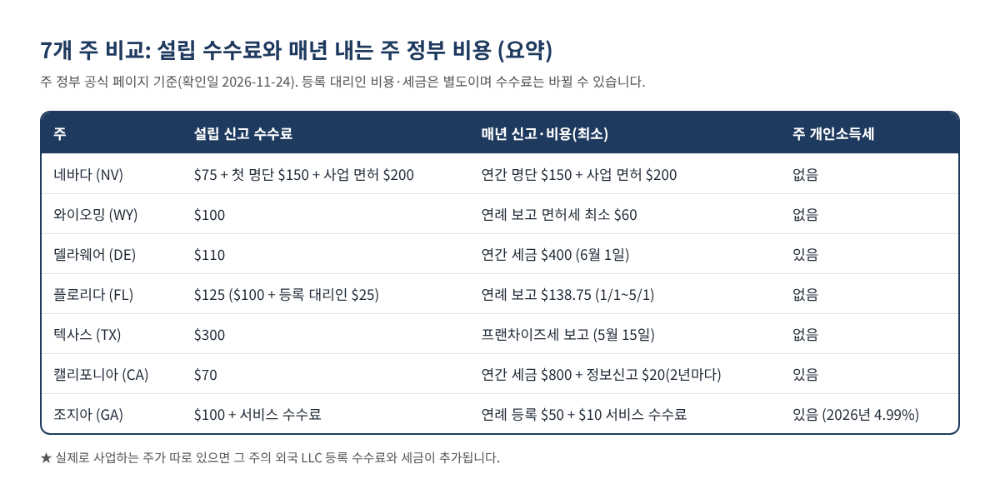
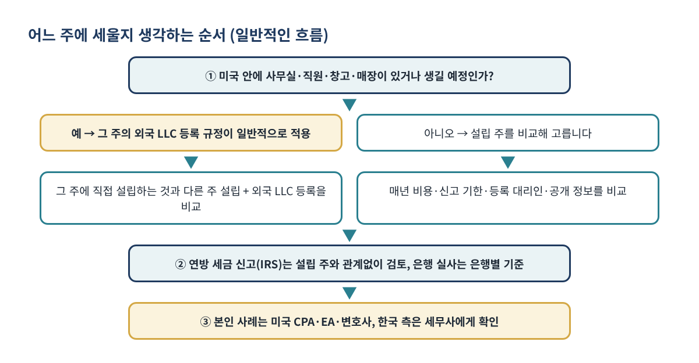
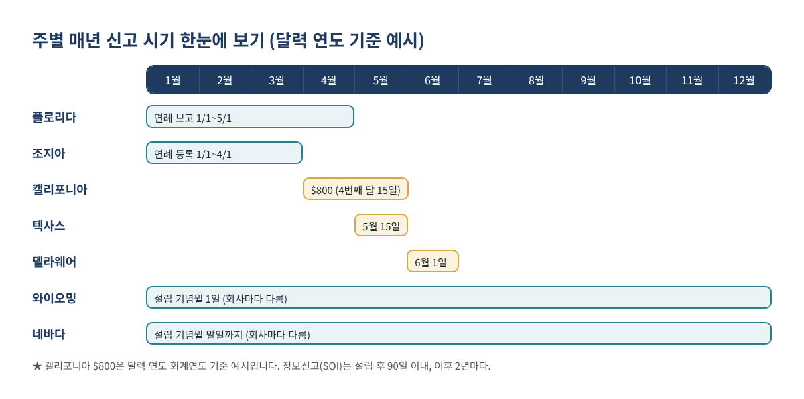

미국에 LLC를 세우려는 한국 거주자가 가장 먼저 고민하는 것이 "어느 주에 세울까"입니다. 인터넷에는 "와이오밍이 싸다", "델라웨어가 좋다", "네바다는 세금이 없다" 같은 말이 많지만, 실제로는 회사가 어디에서 실제로 사업을 하는지에 따라 설립 주보다 더 중요한 주가 따로 생길 수 있습니다. 이 글은 네바다·와이오밍·델라웨어·플로리다·텍사스·캘리포니아·조지아 7개 주를 같은 기준으로 나란히 비교하고, 흔한 오해 하나를 짚어 봅니다.
이 글은 일반적인 교육용 정보이며 세무·법률·재무 자문이 아닙니다. 수수료와 규정은 바뀔 수 있으니 공식 출처에서 확인하세요.
이런 분께 필요합니다
· 한국에 살면서 미국 LLC 설립 주를 비교하고 있는 분
· 이미 다른 주에 LLC를 세웠는데 캘리포니아·조지아 등에서 실제 영업을 시작하려는 분
· 한국 거주 가족이나 지인의 미국 법인 설립을 돕는 재미 한인
LLC는 주 법률에 따라 만들어지는 회사 형태입니다(IRS 안내). 그래서 설립 주는 회사의 "출생지"일 뿐, 회사가 실제로 사무실을 두거나 직원을 고용하거나 창고·매장을 운영하는 주가 따로 있다면 그 주의 규정도 함께 적용되는 것이 일반적입니다.
즉, "와이오밍에 세웠으니 캘리포니아 세금과는 무관하다"는 생각은 실제로 캘리포니아에서 사업을 하는 경우 맞지 않을 수 있습니다. 이때는 설립 주의 연간 비용에 더해 실제 사업 주의 외국 LLC 등록 수수료, 연간 세금, 등록 대리인 비용이 함께 발생합니다. 본인 회사가 어느 주에서 "사업을 하는 것"으로 보는지는 사실관계에 따라 달라지므로 미국 CPA·EA·변호사에게 확인하시기 바랍니다.
또 한 가지, 연방 세금의 기본 구조는 설립 주에 따라 달라지지 않습니다. IRS는 1인 LLC를 기본적으로 소유자와 분리되지 않은 실체(disregarded entity)로, 2인 이상 LLC를 파트너십으로 분류하며, Form 8832로 법인 과세를 선택할 수 있다고 안내합니다. IRS Form 5472 안내서는 외국인이 소유한 미국 disregarded entity가 Form 5472를 첨부한 가결산 Form 1120을 제출해야 한다고 설명하며, 이 검토는 설립 주와 관계없이 필요합니다.
아래 표는 각 주 정부 공식 페이지에서 확인한 수치입니다(확인일 2026-11-24). 등록 대리인 서비스 비용, 지방 정부 면허, 세무 대리 비용은 포함하지 않았습니다.
| 주 | 설립 신고 수수료 | 매년 신고·비용 | 매년 기한 |
|---|---|---|---|
| 네바다 | 설립 $75 + 첫 관리자·구성원 명단 $150 + 주 사업 면허 $200 | 연간 명단 $150 + 사업 면허 $200 (명단 지연 수수료 $75) | 설립 기념월 말일까지 |
| 와이오밍 | $100 | 연례 보고 면허세: $60 또는 와이오밍 내 자산의 0.0002배 중 큰 금액 | 설립 기념월 1일 (60일 내 미납 시 해산 대상) |
| 델라웨어 | $110 | LLC 연간 세금 $400, 연례 보고서 없음 (연체 시 벌금 $200 + 월 1.5% 이자) | 매년 6월 1일까지 |
| 플로리다 | $125 ($100 + 등록 대리인 지정 $25) | 연례 보고 $138.75 (5월 1일 이후 접수 시 $400 연체 수수료 추가) | 1월 1일 ~ 5월 1일 |
| 텍사스 | $300 | 프랜차이즈세 보고 (기준 이하라도 공개정보보고서 또는 소유정보보고서 제출) | 매년 5월 15일 |
| 캘리포니아 | $70 | 연간 세금 $800 + 정보신고서(Statement of Information) $20 (설립 후 90일 이내, 이후 2년마다) | 과세연도 4번째 달 15일 |
| 조지아 | $100 신고 수수료 + 온라인 서비스 수수료 | 연례 등록 $50 + 서비스 수수료 $10 | 1월 1일 ~ 4월 1일 |
조지아 온라인 설립 서비스 수수료는 조지아 주무장관의 두 공식 안내 페이지에 서로 다르게($5와 $10) 적혀 있어 금액을 표기하지 않았습니다. 신청 화면에서 최종 금액을 확인하세요. 와이오밍 면허세는 "$60 또는 1달러당 0.0002(two-tenths of one mill) 중 큰 금액"이라는 공식 수수료표 문구를 옮긴 것입니다.

LLC 자체의 연방 과세 방식과 별개로, 주는 각자 소득세나 총수입 기준 세금을 둡니다. 비거주자라도 그 주에서 발생한 소득(state-source income)에는 주 소득세 신고 의무가 생길 수 있습니다. 예를 들어 캘리포니아 FTB 안내서(Pub. 1100)는 비거주자에게 캘리포니아 원천 소득을 과세한다고 설명하고, 델라웨어 세무국은 델라웨어 원천 소득이 있는 비거주자가 비거주자 신고서(PIT-NON)를 내는 사례를 안내합니다.
| 주 | 주 개인소득세 | 주 법인소득세 (법인 과세 시) | 총수입·상업·마진형 세금 |
|---|---|---|---|
| 네바다 | 개인 소득세 없음 (주 세무국 안내) | 세무국 안내에 별도 법인소득세 설명 없음 — 직접 확인 권장 | Commerce Tax: 네바다 총수입이 회계연도당 $4,000,000 초과 시 (이하이면 신고 의무 없음) |
| 와이오밍 | 없음 (와이오밍 경제개발청 안내) | 없음 (같은 안내) | 해당 안내 없음 |
| 델라웨어 | 있음 (원천 소득이 있는 비거주자 신고 사례 안내) | 델라웨어 배분 과세소득의 8.7% | 총수입세(gross receipts tax)와 연간 사업 면허 요건 있음 |
| 플로리다 | 없음 (주 세무국 안내) | 5.5% (주 세무국 F-1120A 서식 기준), 연방에서 법인으로 과세되는 실체 포함 | 해당 안내 없음 |
| 텍사스 | 없음 (텍사스 감사원 안내) | 법인소득세 대신 프랜차이즈세 | 프랜차이즈세: 2026·2027년 무납부 기준 $2,650,000, 세율 소매·도매 0.375%, 기타 0.75% |
| 캘리포니아 | 있음 (비거주자는 캘리포니아 원천 소득에 과세) | 있음, 법인 최소 프랜차이즈세 $800 | LLC fee: 캘리포니아 소득 $250,000 이상부터 $900 ~ $11,790 (아래 참고) |
| 조지아 | 있음, 2026년 단일세율 4.99% | 4.99% (주 세무국 안내) | 법인 순자산세(net worth tax) 별도 |
캘리포니아 LLC fee는 캘리포니아 총소득 기준으로 $250,000~$499,999는 $900, $500,000~$999,999는 $2,500, $1,000,000~$4,999,999는 $6,000, $5,000,000 이상은 $11,790입니다(FTB). 연간 세금 $800과 별도이며, FTB는 2021~2023년에 시작한 과세연도에만 적용되던 첫해 면제가 현재는 적용되지 않는다고 안내합니다.
주의: "세금이 없는 주"라는 말은 보통 그 주의 개인소득세가 없다는 뜻입니다. 연방 소득세, 연방 신고 의무(Form 5472 등), 실제 사업 주의 세금, 판매세, 급여 관련 세금은 별개입니다. 예를 들어 네바다 세무국 Commerce Tax FAQ는 Modified Business Tax(MBT)라는 별도 세금도 언급하므로, 직원을 고용하는 경우 해당 여부를 세무국 안내에서 확인하는 것이 좋습니다.
7개 주 모두 주 안에 주소를 둔 등록 대리인을 두도록 하고 있습니다. 공개 서류에 무엇이 기재되는지는 주마다 다르며, 아래는 설립·연례 서류 양식이 요구하는 항목을 기준으로 정리한 것입니다.
| 주 | 등록 대리인 | 설립·연례 서류에 기재되는 관리자·구성원 정보 |
|---|---|---|
| 네바다 | 필수, 송달용 실제 주소 (NRS 86.231) | 연간 명단에 관리자(없으면 관리 구성원) 이름·직함·주소 기재 (NRS 86.263) |
| 와이오밍 | 필수, 와이오밍 실제 주소 | 설립 양식에 구성원·관리자 이름 항목 없음 (조직자 서명, 주소, 연락처 기재) |
| 델라웨어 | 필수, 델라웨어 등록 사무소 | 설립 증명서 양식에 구성원·관리자 이름 항목 없음 (권한 있는 자 서명) |
| 플로리다 | 필수, 플로리다 실제 주소 (사서함 불가) | 관리자·권한 대표자 이름은 선택 사항, 구성원은 기재하지 않도록 안내 |
| 텍사스 | 필수, 회사가 자기 대리인이 될 수 없음 | 최초 관리자 또는 구성원 이름·주소 기재 (Form 205) |
| 캘리포니아 | 필수 (Agent for Service of Process) | 정보신고서에 관리자(없으면 구성원) 이름·주소, 주소 정보는 공개 기록 |
| 조지아 | 필수, 조지아 소재 | 설립 서류 필수 항목은 회사 이름, 관리자 이름은 선택 기재 |
중요: 위 내용은 주 공개 서류에 무엇이 나타나는지에 대한 설명일 뿐입니다. 주 서류에 이름이 나오지 않더라도 IRS 신고(예: Form 5472), 은행의 고객 확인(KYC) 절차, 그 밖의 연방·주 신고에는 실제 소유자 정보를 정확하게 제출해야 합니다. 명의만 빌려주는 대리 소유자나 사실과 다른 정보 제출은 법적 문제로 이어질 수 있습니다.
FinCEN의 실질 소유자 정보(BOI) 보고는 2025년 이후 크게 바뀌었습니다. FinCEN은 현재 미국에서 설립된 회사와 그 실질 소유자는 BOI 보고 대상에서 면제된다고 안내하며, 이를 확정하는 최종 규칙이 2026년 8월 11일자로 나와 2026년 8월 14일부터 시행되었다고 밝힙니다. 반면 FinCEN 페이지는 외국 법률로 설립되어 미국 주에 사업 등록을 한 회사는 별도 면제가 없는 한 보고 대상이라고 설명합니다. 규정이 다시 바뀔 수 있으니 FinCEN 공식 페이지를 확인하세요.
아래는 일반적인 경향이며, 특정 주를 추천하는 것이 아닙니다.
개인소득세가 없고, Commerce Tax는 네바다 총수입이 $4,000,000을 넘는 경우에만 적용됩니다. 대신 설립 첫해에 설립 $75, 첫 명단 $150, 사업 면허 $200이 들고, 매년 명단 $150과 사업 면허 $200이 반복됩니다. 네바다에서 실제 사업을 하거나 할 계획인 경우 일반적으로 검토 대상이 됩니다.
설립 $100, 연례 면허세 최소 $60으로 7개 주 중 매년 주 정부 비용이 낮은 편이고, 개인·법인 소득세가 없다고 안내됩니다. 미국 안에 물리적 거점 없이 온라인으로만 운영하는 경우 비교 대상에 넣어 볼 수 있지만, 다른 주에서 실제 사업을 하면 그 주의 등록과 세금이 추가됩니다.
설립 $110, 매년 6월 1일까지 LLC 연간 세금 $400이며 연례 보고서는 없습니다. 투자 유치나 법인 전환을 염두에 두는 경우 비교 대상에 넣어 볼 수 있습니다. 델라웨어에서 실제 사업을 하면 총수입세와 사업 면허, 법인소득세(법인 과세 시 8.7%)도 검토해야 합니다.
설립 $125, 연례 보고 $138.75이며 5월 1일을 넘기면 $400 연체 수수료가 붙습니다. 개인소득세는 없지만 연방에서 법인으로 과세되는 실체에는 5.5% 법인세가 적용됩니다. 플로리다에 사무실이 있거나 생길 예정인 경우 직접 설립과 비교해 볼 수 있습니다.
설립 수수료가 $300로 높은 편이지만 개인소득세가 없습니다. 텍사스 LLC는 프랜차이즈세 대상이며, 2026·2027년 총수입 $2,650,000 이하라면 납부세액은 없지만 공개정보보고서 또는 소유정보보고서는 매년 5월 15일까지 내야 합니다. 텍사스에서 실제로 사업하는 경우 외국 LLC 등록 수수료($750)와 직접 설립 수수료($300)를 함께 비교해 볼 수 있습니다.
재미 한인이 이미 사업체를 운영하고 있을 수 있는 주라서 함께 비교합니다. 설립 수수료는 $70로 낮지만 매년 $800 연간 세금이 있고, 캘리포니아 소득이 $250,000 이상이면 LLC fee가 추가됩니다. 중요한 점은 다른 주에서 설립하더라도 캘리포니아에서 사업을 하는 것으로 보는 경우 일반적으로 $800 연간 세금, 해당 시 LLC fee, 외국 LLC 등록($70)을 검토해야 한다는 것입니다. 캘리포니아에 사무실·직원·창고가 있거나 생길 예정인 경우 직접 설립과 비교해 보는 것이 일반적입니다.
캘리포니아와 마찬가지로 재미 한인이 이미 사업체를 운영하고 있을 수 있는 주라서 함께 비교합니다. 설립 신고 수수료 $100, 매년 1월 1일~4월 1일 연례 등록 $50(+서비스 수수료 $10)으로 주 정부 비용은 낮은 편이지만, 2026년 개인소득세 단일세율 4.99%가 있습니다. 연례 등록을 하지 않으면 행정 해산 대상이 되며 5년 이내 복구 비용은 $260입니다. 조지아에서 실제로 사업하는 경우 직접 설립과 비교해 볼 수 있습니다.

서울에 사는 대표가 수공예품을 온라인으로 판매하는 1인 LLC를 만들려 합니다. 첫해에는 미국에 거점이 없고, 둘째 해에 캘리포니아에 작은 창고를 임차해 직원 1명을 고용할 계획이라고 가정합니다. 아래는 주 정부 수수료만 비교한 예시 값이며, 등록 대리인 비용, 세무 대리 비용, LLC fee, 연방 세금은 제외했습니다.
| 구분 (예시 값) | A안: 와이오밍 설립 후 캘리포니아 등록 | B안: 처음부터 캘리포니아 설립 |
|---|---|---|
| 1년차 (미국 거점 없음) | 와이오밍 설립 $100 | 설립 $70 + 정보신고 $20 + 연간 세금 $800 = $890 |
| 2년차 (캘리포니아 창고·직원) | 와이오밍 면허세 $60 + 캘리포니아 외국 LLC 등록 $70 + 정보신고 $20 + 연간 세금 $800 = $950 | 연간 세금 $800 |
| 등록 대리인 | 와이오밍과 캘리포니아 두 곳 | 캘리포니아 한 곳 |
| 매년 챙길 주 신고 | 두 주 (기한이 서로 다름) | 한 주 |
이 예시에서는 첫해에는 A안이 비용이 낮지만, 캘리포니아에서 실제 사업이 시작되면 두 주의 비용과 신고가 겹칩니다. 캘리포니아 진출 시점과 규모가 불확실한 경우, 이 비교를 2~3년 단위로 해 보는 것이 일반적인 방법입니다. 실제 판단은 매출, 직원, 재고 위치 등 사실관계에 따라 달라집니다.

한국 측 의무도 확인하세요. 한국 거주자가 미국 회사를 소유하거나 미국 계좌를 보유하면, 외국환거래법상 해외직접투자 신고, 해외금융계좌 신고, 국세청에 대한 해외현지법인 자료 제출 같은 한국 측 의무가 생길 수 있습니다. 대상 여부, 기준 금액과 기한은 개인 상황에 따라 다르므로 한국 세무사나 거래 은행에 확인하세요.
미국에 물리적 거점이 없다면 설립 주의 비용과 신고 부담이 주된 비교 기준이 되는 경우가 많습니다. 다만 재고를 미국 창고에 두거나 직원을 고용하는 등 상황이 바뀌면 그 주의 규정을 다시 확인해야 합니다.
일반적으로 캘리포니아 SOS에 외국 LLC 등록(Form LLC-5, $70)을 하고, FTB의 $800 연간 세금과 해당 시 LLC fee, Form 568 신고를 검토하게 됩니다. 회사를 캘리포니아로 옮기는 방법도 있지만 절차와 세금 영향은 전문가와 상의해야 합니다.
델라웨어는 LLC에 연례 보고서를 요구하지 않고 매년 $400의 연간 세금을 받습니다. 투자 구조에 맞는지는 투자자 요구와 법인 형태에 따라 달라지므로 변호사와 확인하는 것이 좋습니다. LLC와 C-Corp의 세금 차이는 이 시리즈의 다음 글에서 다룹니다.
아닙니다. 주 공개 서류에 기재되는 항목이 다를 뿐, IRS 신고, 은행 고객 확인, 그 밖의 법적 신고에서는 실제 소유자 정보를 정확히 제출해야 합니다.
FinCEN은 현재 미국에서 설립된 회사와 그 실질 소유자를 BOI 보고에서 면제한다고 안내합니다. 외국에서 설립된 회사가 미국 주에 등록한 경우는 보고 대상일 수 있습니다. 규정 변경이 잦으니 FinCEN 페이지를 확인하세요.
이 글은 일반적인 교육용 정보이며 세무·법률·재무 자문이 아닙니다. 주 정부 수수료, 세율, 신고 기한, 연방 보고 규정은 자주 바뀌며, 이 글의 수치는 확인일 기준입니다. 본인 회사에 어떤 주의 규정이 적용되는지는 사실관계에 따라 달라지므로, 결정하기 전에 각 주 공식 페이지와 IRS·FinCEN 안내를 확인하고 미국 CPA·EA·변호사와, 한국 측 의무는 한국 세무사와 상의하시기 바랍니다.